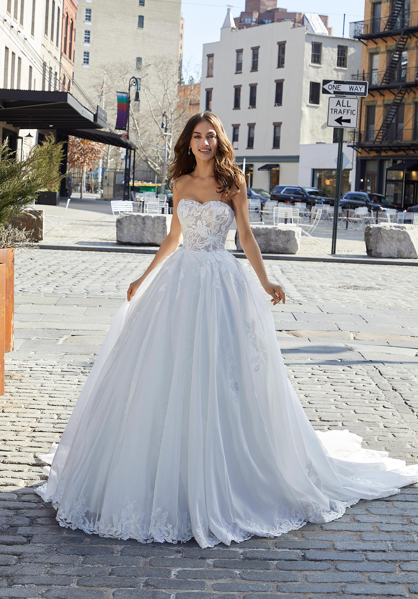
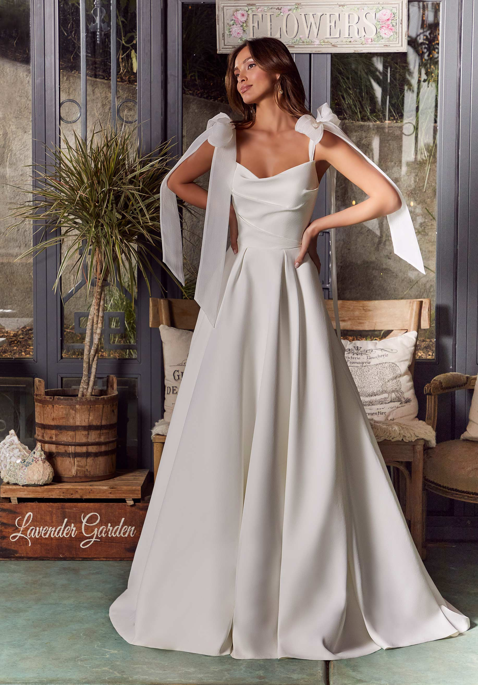
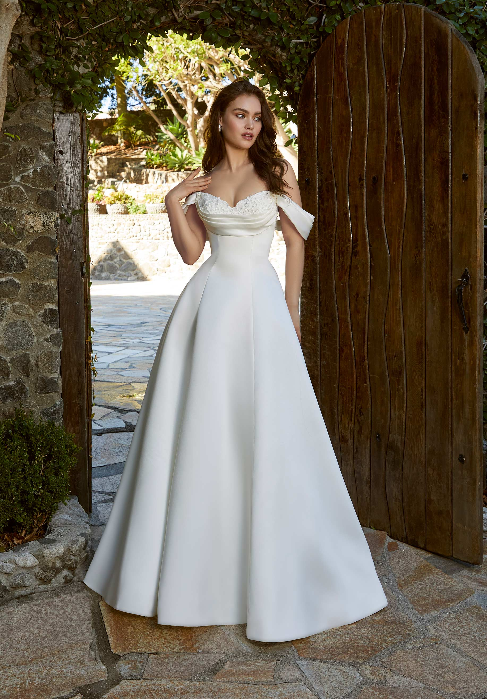
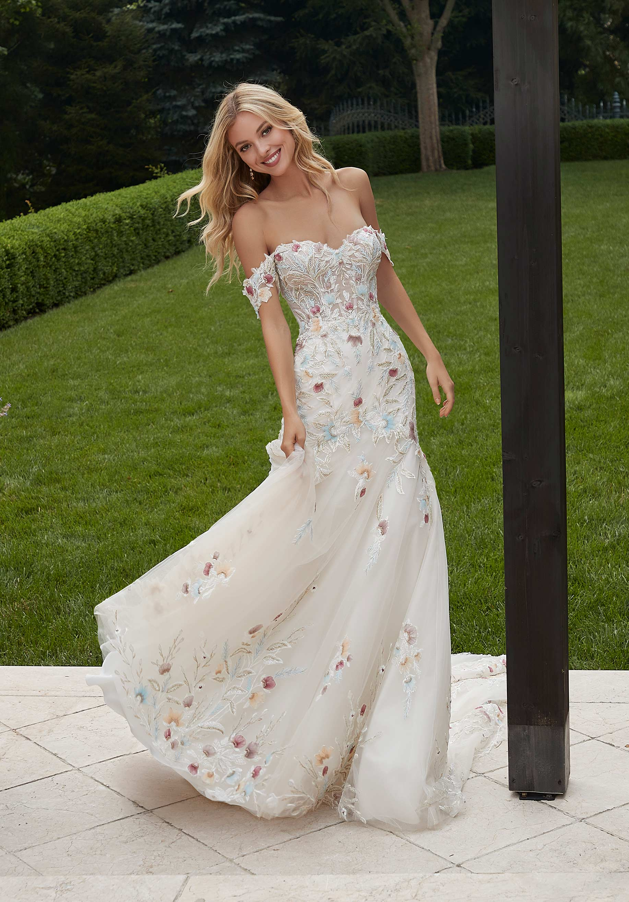
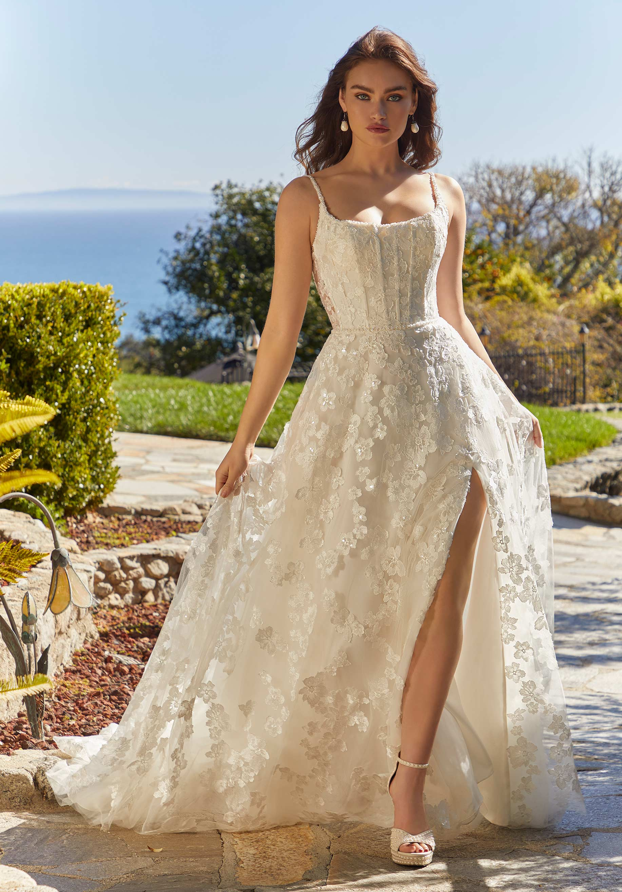
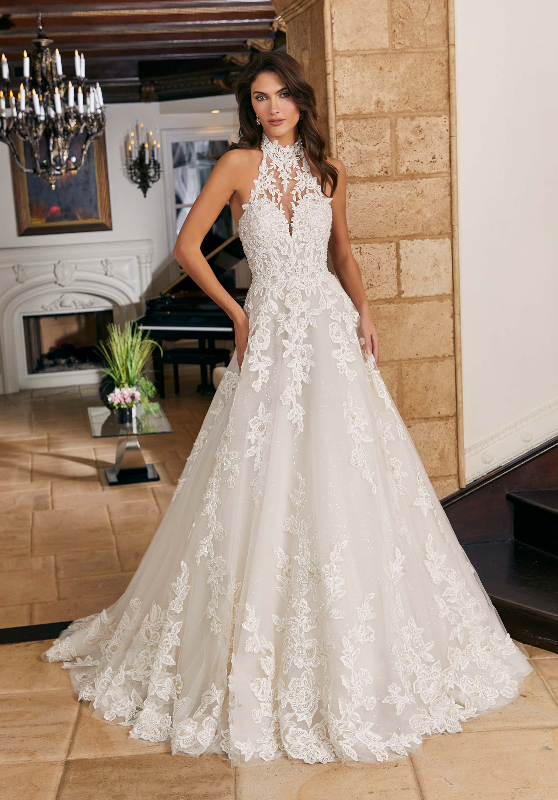
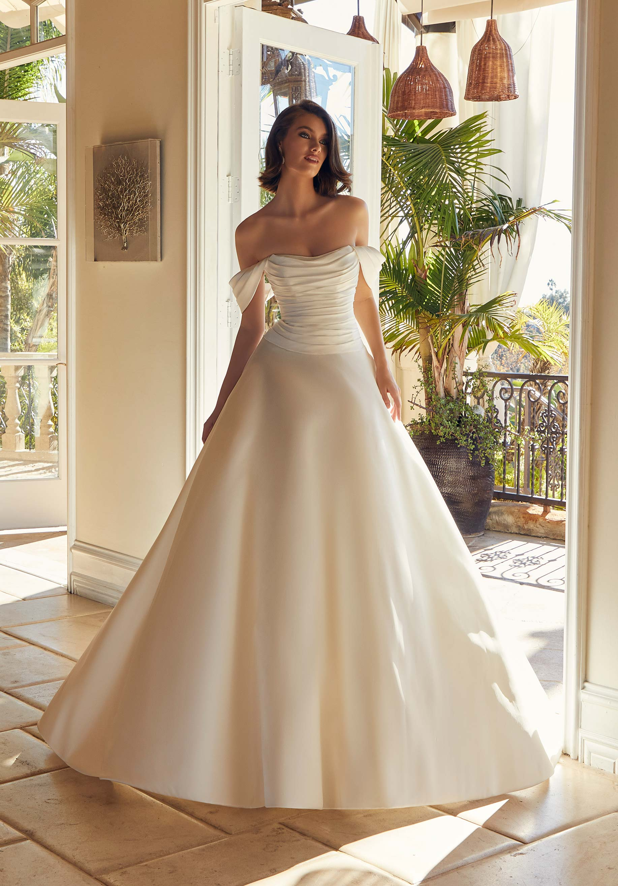
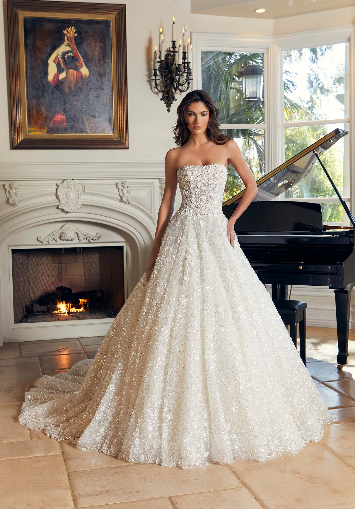

Romantic ball gown in Larissa satin has a plunging sweetheart bodice with embroidered lace appliqués.
Gorgeous A-line has 3D frosted lace appliqués with a plunging corset bodice on a box-pleated tulle skirt
Dreamy ball gown has frosted embroidery with 3D petals and a sheer, draped corset bodice. 
Beautiful A-line in chiffon floral embroidered net over sparkle tulle with a strapless bodice and detachable stole sleeves
Effortless A-line has a 3D floral bodice with an off-the-shoulder neckline and pearl buttons on a chiffon skirt.
Chic fit and flare has a corset boned, petal satin bodice on a frosted Chantilly lace skirt with a detachable tulle overskirt
Whimsical A-line has a plunging neckline with 3D floral embroidery and crystal beading in tulle over swiss dot fabric
Effortless A-line has a 3D floral bodice with an off-the-shoulder neckline and pearl buttons on a chiffon skirt.
Glittering ball gown has a strapless neckline on a drop waist bodice in allover pearl and sequin floral beaded tulle.
FIND A STORE
With authorized retailers globally, you’re sure to find a memorable, in-person dress shopping experience. Our seasoned stylists and Morilee ambassadors will help you find your dream wedding dress at a store near you!
DISCOVER A STORE NEAR YOU